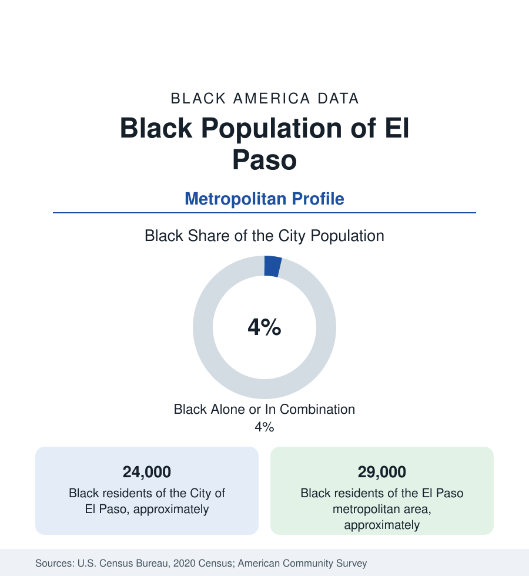

Black Cities
Black El Paso: The Border's Garrison and the Sun City's Small, Deep Community
El Paso holds about 24,000 Black residents in the city and 29,000 across the metro — a small share of a border metropolis, built largely by Fort Bliss. The census profile.

El Paso holds about 24,000 Black residents within the city — Black alone or in combination, a small share of its 680,000 people in one of America's most Mexican-American major cities — and about 29,000 across the metropolitan area. Small numbers, deep roots: the Buffalo Soldiers patrolled this border from Fort Bliss in the 1870s, the Dunbar and Douglass schools educated the segregated city's children, and the modern community — heavily military, professional, and intermarried into the border's binational fabric — is the garrison profile in its desert form.
Fort Bliss, the Northeast, and the Old Eastside Ground
The geography follows the post: Fort Bliss — the Army's vast air-defense and armored reservation, among the largest installations in the service — sits in the city's northeast, and the Northeast Side (the subdivisions around the post's gates, along Dyer Street and Transmountain) holds the modern community's center of gravity: soldiers, retirees, and the military families of the 1st Armored Division's home station. The historic ground lies southeast of downtown — the old Eastside neighborhoods around the Douglass School (the segregated Black school whose name the modern Douglass Elementary keeps, its alumni association a living institution) and the McCall Neighborhood Center, the community's gathering hall for generations — where the pre-Bliss Black El Paso of railroad porters, domestics, barbers, and teachers lived in the Segundo Barrio's shadow. The churches (Second Baptist and the congregations of the east side) and the NAACP chapter's century of border advocacy complete the institutional map of a community that has always punched at city scale from a small base.
The Garrison Economy on the Border
The employment data are the post's: Fort Bliss's tens of thousands of soldiers and civilians (its Black share at the Army's standard high levels, its retirees settling the Northeast in the garrison-retention pattern), the William Beaumont Army Medical Center, and the defense contractors of the air-defense mission — layered over the border economy's tiers: the federal law-enforcement and customs payrolls (the Border Patrol's El Paso Sector headquarters, the ports of entry's CBP workforce — a major Black federal employer here in the data's telling detail), UTEP (the University of Texas at El Paso, the city's research university), the healthcare systems, and the logistics of the binational trade corridor. The indicators reflect the mix: Black incomes lifted by the military-federal payrolls above the city's overall (heavily service-wage) distribution, homeownership in the Northeast's subdivisions, and a poverty file smaller and less concentrated than the garrison profile's average — the border city's Black data reading, in effect, like a federal workforce profile pasted onto a low-wage metro.
Buffalo Soldiers and the Border's Black Century
The history file is singular: the Ninth and Tenth Cavalry and the Black infantry regiments rotated through the border forts after the Civil War — Fort Bliss's own garrison included Black regulars whose descendants and memory the post's museums keep — and the border's racial order (a tri-racial city in the old data: Anglo, Mexican, and Black, its Jim Crow applied in the Texas manner against a Mexican-majority backdrop) made El Paso's Black civic life a distinct negotiation the historians of the borderlands document. The movement file includes the school desegregation cases of the 1950s and the Douglass alumni's preservation work; the cultural ledger adds the city's Black History Month institutions, the Juneteenth observances at McCall, and the intermarriage data — Black El Paso's families woven into Mexican-American El Paso at rates the census's multiracial tables register — as the border signature in the household data.
Change and the Estimates
The estimates show the metro growing steadily on trade, logistics, and the post's missions — the Black population growing in count with the Bliss expansions, its small share steady — with the current files running through the post's modernization programs, the downtown and medical-center districts' growth, and the border economy's cycles (the maquila and migration politics that set the region's weather). For the community, the live chapters remain the Northeast's maturation — its second generation choosing whether the desert post town becomes a hometown — and the Douglass ground's preservation in the east side's redevelopment path.
Reading the El Paso Numbers
El Paso's 29,000 metro Black residents are the smallest community in this section's major-city set and among its most distinct: Buffalo Soldiers' descendants and armored-division families, federal paychecks on a binational border, a segregated schoolhouse whose alumni still gather. The border's data are usually told in two languages. This file is the third voice in the room — small, and there since the forts.
More in Black Cities
Black Atlanta: Population, Distribution, and Growth of a Black Metropolis
Metro Atlanta holds more than two million Black residents — roughly one in three, second only to New York. The suburban distribution, migration history, and composition of Black Atlanta in the census data.
Black New York: The Largest Black Population in America
The New York metropolitan area holds about 3.4 million Black residents — more than any metro in the nation — and the city itself about two million. The census profile.
Black Washington: The District and the Metro
The Washington metro holds about 1.6 million Black residents, and the District itself — long a majority-Black city — now records a Black share near 41 percent. The census profile.
Source: U.S. Census Bureau, 2020 Census; American Community Survey; Population Estimates Program.